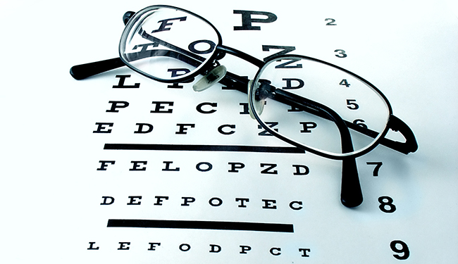
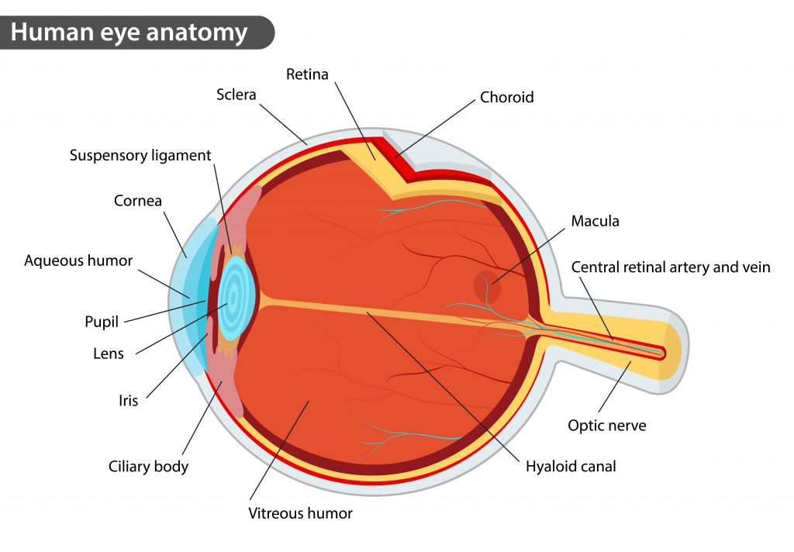

Eye
An optometrist is an eye doctor who has earned the Doctor of Optometry
(OD) degree. Optometrists examine eyes for both vision and health
problems, and correct refractive errors by prescribing eyeglasses and
contact lenses. Some optometrists also provide low vision care and
vision therapy.


© 2019 We Hospital. All rights are reserved